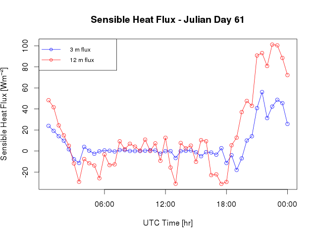
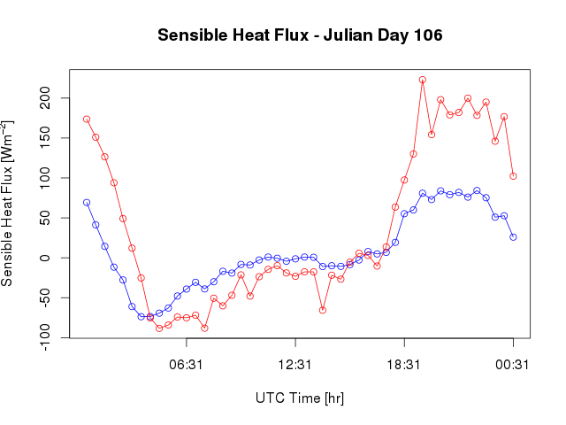
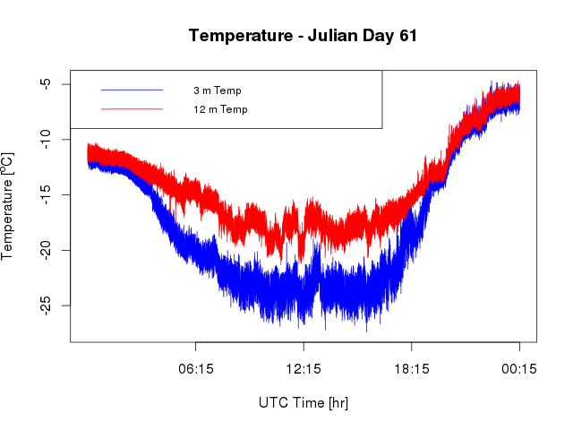
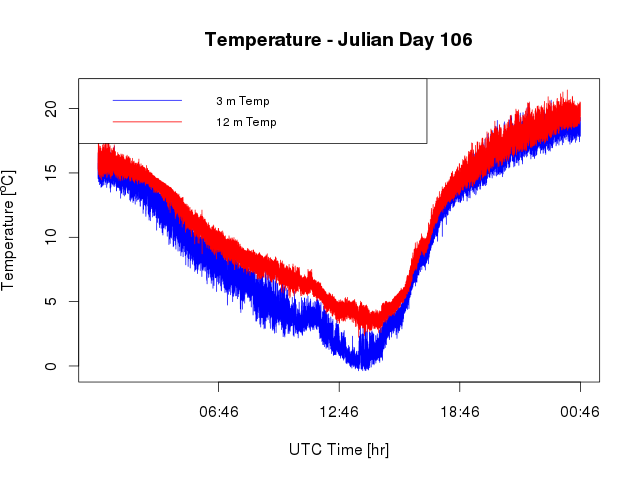

Evapotranspiration:
A Critical Component of the Alaskan Water Cycle and Climate Change
A Critical Component of the Alaskan Water Cycle and Climate Change
Preparatory Science for NASA's planned HyspIRI Mission
| Sample Data - Sensible Heat Flux |


| Sample Data - Sonic anemometer temperatures |

